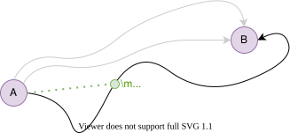
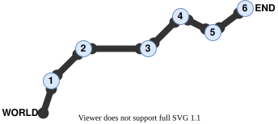
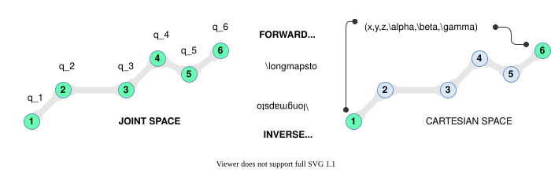

A Tour of Robot Mechanics
Last updated: Jan 27, 2022
This article provides a conceptual but rigorous understanding of common robot kinematics and dynamics, presented in a forward and inverse problems setting. After careful reading, the ‘whys’ should become apparent, allowing the ‘hows’ to be better appreciated.
Motivation
The basic functionality we’d like robots to have, is to move. However, describing a motion from point $\mathsf{A}$ to point $\mathsf{B}$ precisely is not straightforward.
Consider these two points $\mathsf{A}$ and $\mathsf{B}$.

There are infinite paths from $\mathsf{A}$ to $\mathsf{B}$. Same start and end positions, but different intermediate states. The gray paths are two alternatives to our desired one.
The activity of generating and deciding on the desired path from $\mathsf{A}$ to $\mathsf{B}$ is called path planning. But even with a given and known path, there are many ways to describe it. To people, a Cartesian description with coordinates $(x, y, z)$ and angles $(\alpha, \beta, \gamma)$ is intuitive. However, for robots, it is often the case that a different description is more natural to its shape, mechanics, or application.
For example, common serial robotic arms have (mostly) rigid links connected with moving joints.

Interestingly, this means, when the links can be assumed rigid, the joint locations fully determine the posture of the robot. Indeed, a conventional arm’s description is the state of all its joints. This is its joint configuration. Specifically, if a serial arm has $n-1$ links connected via $n$ joints (the tip or end-effector is considered a joint), then the state of each joint $i$ can be described by a quantity $q_i$. If we know the joint states $\mathbf{q}$, we can reproduce the robot’s posture. We are especially interested in the pose (position and orientation) of the end-effector $\mathtt{END}$, relative to the world frame $\mathtt{WORLD}$.
What we then need is a fast and effective method (in the mathematical sense), be it analytical or algorithmic, to seamlessly convert between two representations or frames. This structured, mathematical treatment of the problem is called robot kinematics.
The apparent notion here is that there is a joint space for a robot, and a Cartesian world space for its environment.

To convert between these spaces is often fundamental for robot design, control, planning, and usage. Robot kinematics formulates transformations between joint and world spaces the robot’s posture (zero-order or positional state) and its velocity (first-order or differential state). This is done in a purely geometric sense, with complete disregard to physical information such as mass or force.
However, a robot is a system designed to operate in the physical world. This means, we cannot get far with only geometric encoding. We must at some point encode the physical properties of the robot, more specifically, the dynamic effects, such as inertial, centrifugal, gravitational, and sometimes further dissipative effects when the application demands it. This is robot dynamics.
The most common ‘format’ of robot dynamics inherits from rigid-body dynamics. Note however, that robotics is a vast research community, and there are many projects requiring far beyond rigid-body dynamics, or entirely different physics (such as continuum mechanics for soft robots).
Robot mechanics, thus, in its most common form, builds on Euclidean geometry, linear algebra, and rigid-body kinematics and dynamics. Its purpose is to accurately and precisely describe the kinematic and dynamic states of robots given their geometric and physical parameters.
The takeaway:
We need robot mechanics to describe a robot’s geometric and dynamic states—prerequisites to plan and control motions.
Forward & Inverse Problems
There are three common robot mechanics formulations that interest us: pose kinematics, velocity kinematics, and rigid-body dynamics. Each of these has a forward problem, and an inverse one. This forward/inverse pattern is discussed at an abstract level to familiarize with the structure and shared features.
Informally, a problem in this context involves relating inputs to outputs via some model. When mapping from inputs to outputs, that, is the forward direction. When going from outputs to inputs, that, is the inverse one.
Now, more formally, let $X$ be the input space, $Y$ the output space, and $\mathrm{G}$ the forward map such that $\mathrm{G}: X \to Y$. When the inverse map $\mathrm{G^{inv}}$ of $\mathrm{G}$ exists, establish that $\mathrm{G^{inv}}: Y \to X$. Also, let $(x,y) \in X \times Y$.
Forward model: An input $x$ is mapped to its output $y$ via $\mathrm{G}$,
$$ x \overset{{}_\mathrm{G}}{\mapsto} y \overset{{}_\mathsf{def}}{=} \mathrm{G}(x). $$ Inverse model: An output $y$ is mapped to its input $x$ via some inversion of $\mathrm{G}$.
When a direct inverse $\mathrm{G^{inv}}$ can be derived from $\mathrm{G}$, then the inverse model is,
$$ y \overset{{}_\mathrm{G^{inv}}}{\mapsto} x \overset{{}_\mathsf{def}}{=} \mathrm{G^{inv}}(y). $$
Three questions:
Now that the basic constructs are defined, there are three pertinent problems that can be asked, depending on which two out of $\{x, y, \mathrm{G}\}$ are known.
Forward problem: What unknown output $y$, would known input $x$ map to, via known forward model $\mathrm{G}$? Or, equivalently,
Find $y$ given $x$ and $\mathrm{G}$.
Although this problem seems straightforward and often is, there are no guarantees. In effect, there are scenarios that can make it very challenging.
Inverse problem: What unknown input $x$, would map to known output $y$, via known forward model $\mathrm{G}$? Or, equivalently,
Find $x$ given $y$ and $\mathrm{G}$.
When a direct inverse $\mathrm{G^{inv}}$ is feasible and well-conditioned, an inverse model is used to solve this problem. In some cases, a substitute inverse is constructed. Otherwise, the forward problem is ‘solved backwards’ with adequate techniques.
Model identification: Under what unknown forward model $\mathrm{G}$ would known input $x$ map to known output $y$? Or, equivalently,
Find $\mathrm{G}$ given $(x,y)$.
In our scenarios, that is, common robotics geometries, we would not need model identification. We would know the robot’s parameters, which we would use with known mechanics algorithms to obtain the forward model $\mathrm{G}$.
With a known $\mathrm{G}$, we can attack both the forward and inverse problems.
Pose Kinematics
Forward pose kinematics
Forward pose kinematics (also called forward kinematics, direct kinematics, and forward position kinematics) answers the following question:
What Cartesian pose $\mathbf{x}$ would this known joint configuration $\mathbf{q}$ cause?
$$ \mathbf{q} \overset{{}_\mathsf{FPK}}{\longmapsto} \mathbf{x} $$
The joint configuration $\mathbf{q} = \begin{bmatrix}q_1 & \cdots & q_n\end{bmatrix}^\top$ is often represented as a vector of all joint states $q_i$ for an $n$-joint open kinematic chain (e.g., robotic serial arm).
The Cartesian pose in 2D space is expressed as $\mathbf{x} = \begin{bmatrix}p_x & p_y & \alpha_{xy}\end{bmatrix}^\top$.
Or in 3D, $\mathbf{x} = \begin{bmatrix}p_x & p_y & p_z & \alpha_{yz} & \alpha_{zx} & \alpha_{xy}\end{bmatrix}^\top$.
Here $p_{\{x, y, z\}}$ are the Cartesian positions with respect to each axis. For example, $p_x$ means, distance from the $x$-axis.
$\alpha_{\{yz, zx, xy\}}$ are the Cartesian orientations about each axis. For example, $\alpha_{xy}$ means, angle about the $z$-axis measured in the $xy$-plane from the $x$-axis to the $y$-axis. It is important to know how the angle is measured since $\alpha_{xy} = -\alpha_{yx}$.
$\mathsf{FPK}$ is a mapping to be derived from the geometrical properties of the open kinematic chain of interest.
One common approach to deriving the forward kinematics is by using homogeneous transforms (also called rigid-body transforms). These can be represented with the following matrix.
$$ \mathrm{T} = \begin{bmatrix} \mathrm{R} & \mathbf{d} \\ \mathbf{0}& 1 \end{bmatrix} $$ Here, $\mathrm{R}$ is a rotation matrix and $\mathbf{d}$ is a translation vector.
In 3D, $\mathrm{T}$ evaluates to, $$ \mathrm{T} = \begin{bmatrix} r_{xx'} & r_{xy'} & r_{xz'} & d_x \\ r_{yx'} & r_{yy'} & r_{yz'} & d_y \\ r_{zx'} & r_{zy'} & r_{zz'} & d_z \\ 0 & 0 & 0 & 1 \end{bmatrix} $$ While in 2D, it evaluates to, $$ \mathrm{T} = \begin{bmatrix} r_{xx'} & r_{xy'} & d_x \\ r_{yx'} & r_{yy'} & d_y \\ 0 & 0 & 1 \end{bmatrix} $$ Without going into too much detail, the rotation terms $r_{uv'}$ capture the angular difference of each source basis vector $\{\hat{\mathbf{i}}', \hat{\mathbf{j}}', \hat{\mathbf{k}}'\}$ relative to each each target basis vector $\{\hat{\mathbf{i}}, \hat{\mathbf{j}}, \hat{\mathbf{k}}\}$. For example, $r_{xx'}$ would provide information about about the oriented angle $\measuredangle(\hat{\mathbf{i}}, \hat{\mathbf{i}}')$.
In brief, $\mathbf{R}$ encodes the orientation changes between two frames by comparing the directions of their unit vectors.
In similar fashion, the translation terms $d_u$ capture the positional difference of source frame origin $O'$ relative to the target frame origin $O$ using the source basis vectors $\{\hat{\mathbf{i}}, \hat{\mathbf{j}}, \hat{\mathbf{k}}\}$. For example, $d_x$ would measure the $x$-component of the vector $\overrightarrow{OO'}$.
In brief, $\mathbf{d}$ encodes the position changes between two frames by comparing the locations of their origins.
As a summary, the homogeneous matrix $\mathrm{T}$ encodes the pose differences between the source frame $(O', \hat{\mathbf{i}}', \hat{\mathbf{j}}', \hat{\mathbf{k}}')$ to the target frame $(O, \hat{\mathbf{i}}, \hat{\mathbf{j}}, \hat{\mathbf{k}})$ by comparing the directions of their unit vectors and the locations of their origins.
In practice, the frames on a robot’s joints are assigned using one of many conventional methods. The most famous one is the Denavit–Hartenberg convention with their DH parameters. This standardizes frame assignment and simplifies kinematic calculations. There are other conventions, of which some are preferred in specific scenarios.
After the convention is followed, it becomes convenient to compute the homogeneous transform that maps frame $k+1$ to frame $k$, denoted with ${}^{k}\mathrm{T}_{k+1}(q_{k+1})$, as its value depends on the joint $k+1$’s state $q_{k+1}$. By composing these transforms, as in, $$ \begin{aligned} {}^0\mathrm{T}_n (q_1,\ldots, q_n) &= \prod_{k=0}^{n-1}{}^{k}\mathrm{T}_{k+1}(q_{k+1}) \\ &= {}^\mathrm{0}\mathrm{T}_1(q_1) \cdots {}^{n-1}\mathrm{T}_n (q_n) \end{aligned} $$ we obtain the forward kinematic mapping ${}^0\mathrm{T}_n(\mathbf{q})$. This mapping $\mathbf{x} = {}^0\mathrm{T}_n(\mathbf{q})$ maps the joint states $\mathbf{q}$ to the end-effector Cartesian pose $\mathbf{x}$ relative to the world frame. Effectively, the transform ${}^0\mathrm{T}_n(\mathbf{q})$ contains this pose information in its $4 \times 4$ matrix representation.
You might think the equation $\mathbf{x} = {}^0\mathrm{T}_n(\mathbf{q})$ is a mistake, since $\mathbf{x}$ above was a 6D vector and $\mathrm{T}$ is a $4 \times 4$ matrix. Indeed it is an abuse of notation to simplify the discussion, but is not conceptually incorrect. $\mathrm{T}$ is only one kind of representation for the pose, but there are others. To convert from $\mathrm{T}$ to $\mathbf{x}$, the position is copied from the translation vector $\mathbf{d}$ and the angles are obtained by converting the rotation matrix into a three-angle representation using Euler angles (or their alternatives, Tait-Bryan angles). Thus, the 6D end-effector pose $\mathbf{x}$ is obtained from the $n$-dimensional joint configuration $\mathbf{q}$. For more sound notation, consider $\mathbf{x} = \mathtt{PoseMat2Vec}[{}^0\mathrm{T}_n(\mathbf{q})]$, where the procedure $\mathtt{PoseMat2Vec}$ does the necessary conversions.
The forward kinematic mapping also allows us to do the following, $$ {}^{0}\mathbf{p} = {}^0\mathrm{T}_{n}(\mathbf{q}) \; {}^{n}\mathbf{p} $$ that is, mapping the pose $\mathbf{p}$ of a rigid-body object, from the end-effector frame ${}^{n}\Box$, to the world frame ${}^{0}\Box$; which is highly desirable.
Note that $\mathbf{p}$ here is another homogeneous matrix representing the pose of the object. If the object is modeled as a point instead, then $\mathbf{p}$ can be reduced to a column vector (last row of its homogeneous matrix).
Inverse pose kinematics
Inverse pose kinematics (also called inverse kinematics) answers the question:
What joint configuration $\mathbf{q}$ would cause this desired Cartesian pose $\mathbf{x}$?
$$ \mathbf{x} \overset{{}_\mathsf{IPK}}{\longmapsto} \mathbf{q} $$
For serial robots, their inverse kinematics are often more challenging to obtain. In fact, an analytical solution is not always possible, in which case numerical techniques (optimization, iterative schemes, …) are used instead. Many robots exploit specific design techniques so that analytical inverse kinematic solutions become possible. For example, 6-DOF robotic arms often use spherical wrists to decouple their position and orientation problems, which simplifies the inverse kinematics and yields an analytical solution.
In contrast, consider robots with redundant kinematics; for example, robots whose DOF exceed the DOF of the end-effector. This is the case with 7-DOF robotic arms, which admit no analytical solution. Here, numerical techniques are the preferred option.
Analytical solutions are often obtained from the geometric parameters of the robot, and so the geometric derivation is often involved and highly particular to one type of kinematic chain. Sometimes, it might be possible to invert the forward kinematics directly and solve, but it is rarely the case as the forward kinematic equations are often highly nonlinear.
Numerical solvers have become highly-efficient and are fast enough for most applications. Analytical approaches were historically preferred, but nowadays numerical ones are widespread. Downsides can arise with some numerical solvers can arise with smoothness and stability between consecutive robot configurations. However, there are employable sophisticated techniques when the application requires it.
Higher-Order Models
Without going into excessive detail, there are additional higher-order mechanics for a robot. Pose kinematics addresses only the position and orientation configurations of a robot. However, we can also consider the differential effects, that is, the velocities (both linear and angular). We may also consider the dynamic effects on a robot such as torques, and other nonlinear effects such as inertial, rotational, and gravitational.
These considerations become necessary to extend the robot’s capabilities in planning and controlling its motions.
Here are four additional higher-order problems and their conceptual aims.
Forward velocity kinematics
What Cartesian velocity $\mathbf{\dot{x}}$ would these known joint velocities $\mathbf{\dot{q}}$ cause?
$$ \mathbf{\dot{q}} \overset{{}_\mathsf{FVK}}{\longmapsto} \mathbf{\dot{x}} $$
Inverse velocity kinematics
What joint velocities $\mathbf{\dot{q}}$ would cause this desired Cartesian velocity $\mathbf{\dot{x}}$?
$$ \mathbf{\dot{x}} \overset{{}_\mathsf{IVK}}{\longmapsto} \mathbf{\dot{q}} $$
Inverse rigid-body dynamics
What joint torques $\tau$ would cause this desired motion $(\mathbf{q}, \mathbf{\dot{q}}, \mathbf{\ddot{q}})$?
$$ (\mathbf{q}, \mathbf{\dot{q}}, \mathbf{\ddot{q}}) \overset{{}_\mathsf{IRD}}{\longmapsto} \tau $$
Forward rigid-body dynamics
What resultant motion $(\mathbf{q}, \mathbf{\dot{q}}, \mathbf{\ddot{q}})$ would these known joint torques $\mathbf{\tau}$ cause?
$$ \tau \overset{{}_\mathsf{FRD}}{\longmapsto} (\mathbf{q}, \mathbf{\dot{q}}, \mathbf{\ddot{q}}) $$
Summary Table
This table summarizes each problem with its conceptual mapping and lists common implementation methods.
| PROBLEM | MAPPING | METHODS |
|---|---|---|
| $\mathtt{FPK}$ | $\mathbf{q} \mapsto \mathbf{x}$ | Homogeneous transforms; DH parameters |
| $\mathtt{IPK}$ | $\mathbf{x} \mapsto \mathbf{q}$ | Geometric derivation; Analytical inversion; Numerical optimization |
| $\mathtt{FVK}$ | $\mathbf{\dot{q}} \mapsto \mathbf{\dot{x}}$ | Robot geometric Jacobian; Robot analytical Jacobian |
| $\mathtt{IVK}$ | $\mathbf{\dot{x}} \mapsto \mathbf{\dot{q}}$ | Jacobian direct inverse; Jacobian pseudoinverse |
| $\mathtt{IRD}$ | $(\mathbf{q}, \mathbf{\dot{q}}, \mathbf{\ddot{q}}) \mapsto \tau$ | Recursive Newton–Euler algorithm; Euler–Lagrange method |
| $\mathtt{FRD}$ | $\tau \mapsto (\mathbf{q}, \mathbf{\dot{q}}, \mathbf{\ddot{q}})$ | Composite rigid-body algorithm; Articulated-body algorithm |
References
[1] Siciliano et al., Robotics: Modeling, Planning, and Control, 2009.
[2] Featherstone, Rigid Body Dynamics Algorithms, 2008.